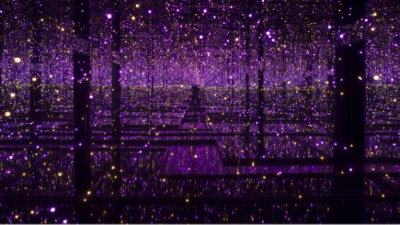
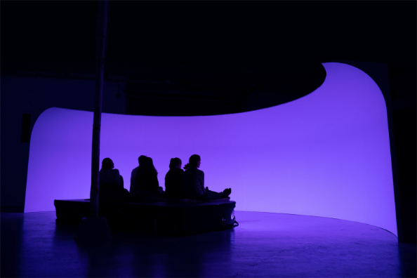
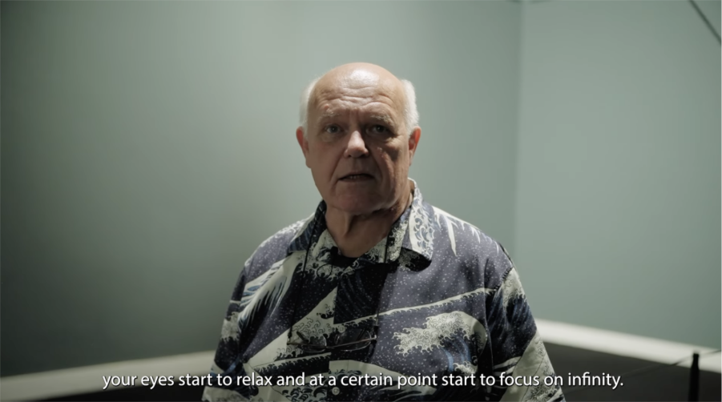
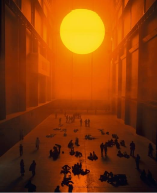
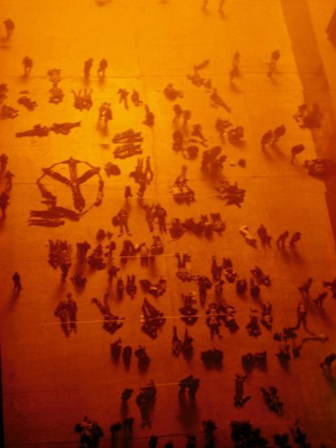
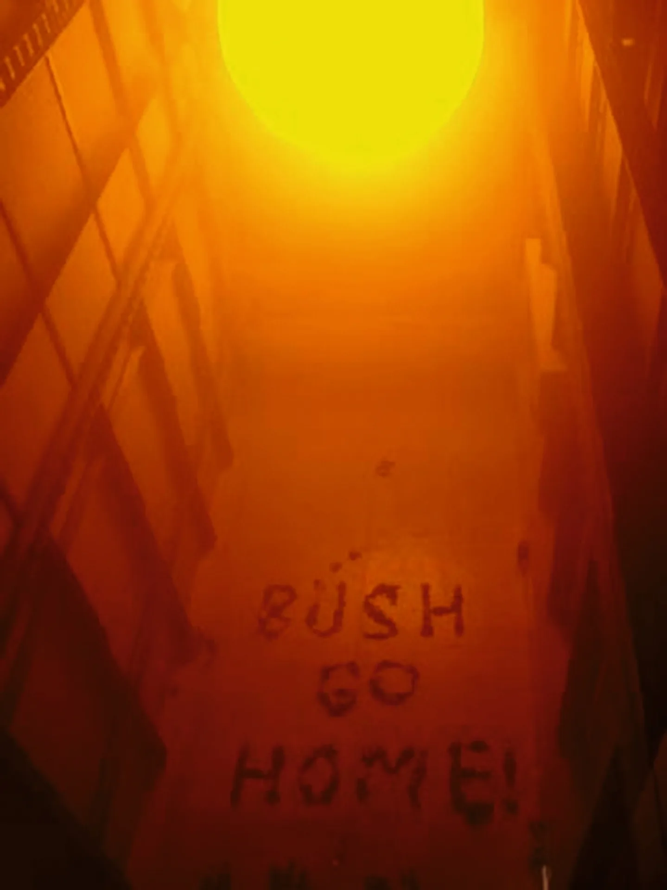
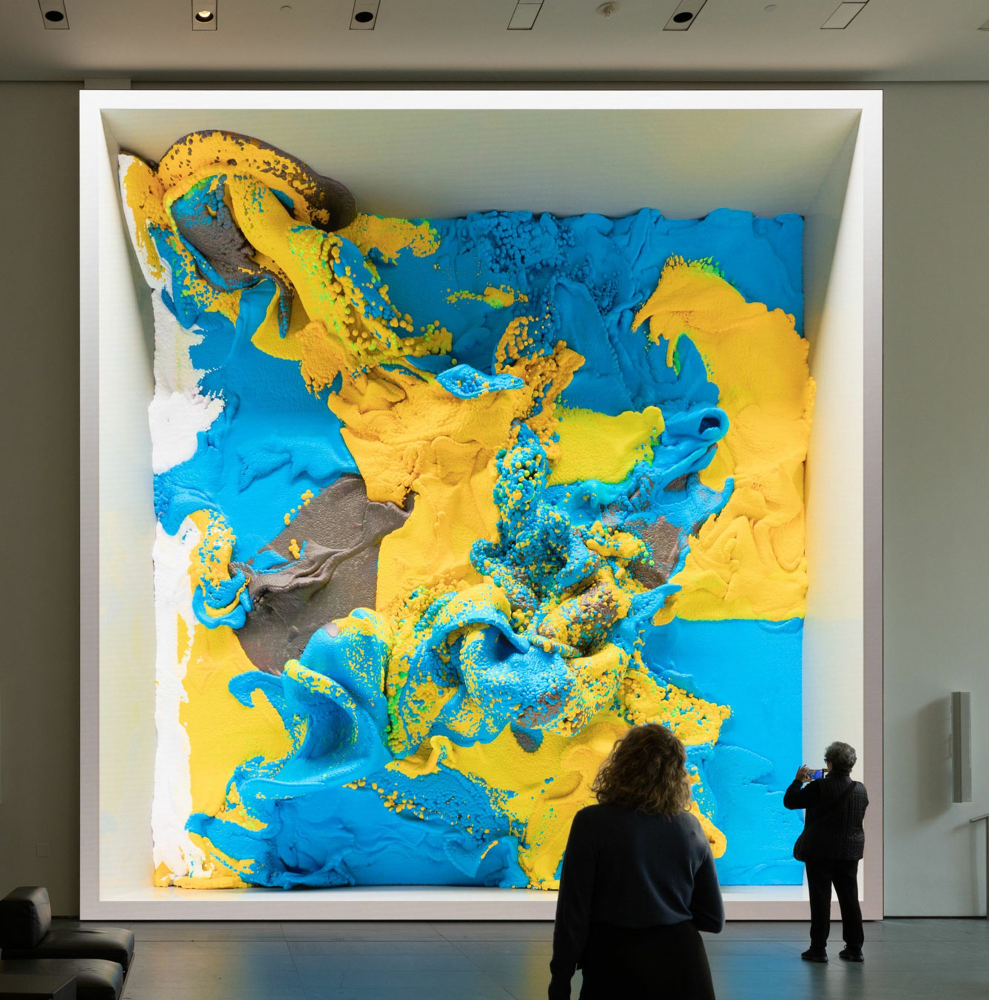
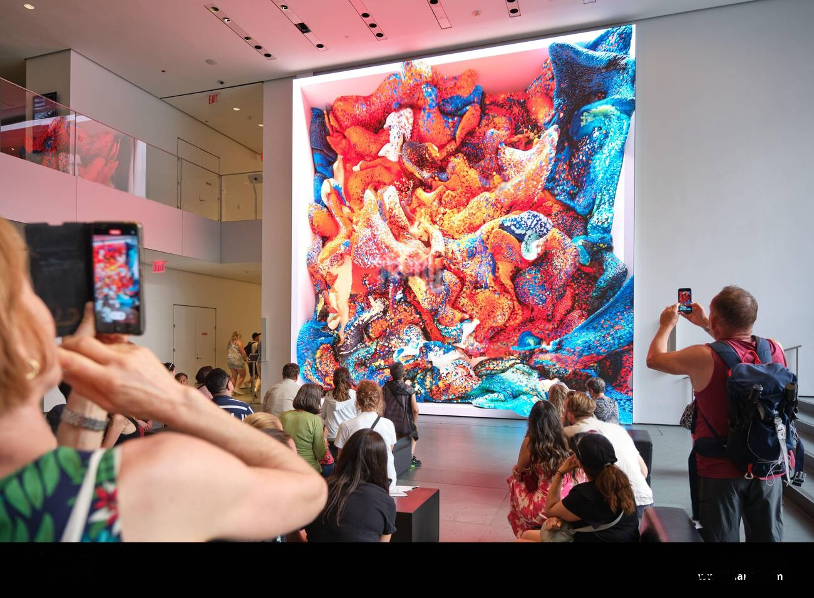
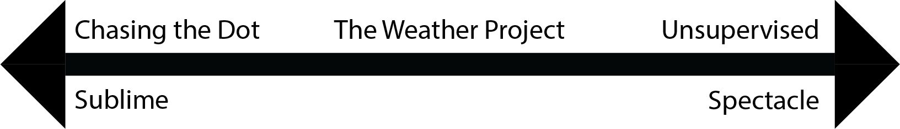

Immersing in Experience and Performance
Misha van Rooij
Introduction
After a rather boring couple of hours walking around the Tate museum in London around a year ago, I was standing in line for an extra exhibition of the Japanese artist Yayoi Kusama. After 45 minutes standing in line, seeing a lot of people already holding their phone ready to film everything, we (me and my mom) with a handful of people could go into a Yayoi’s Infinity Mirror Room, Filled with the Brilliance of Life (Fig. 1). It was built so that sense of space was lost, making it an infinite environment, which was the case; I felt disorientated and lost control of space. This feeling and sensation was something I never experienced before.
Looking back, I now understand this moment as an experience of the sublime. Not because the work announced itself as such, but because it confronted me with a loss of control. It was the tension between being overwhelmed and remaining safe that evoked the sublime.

What I also noticed were the rest of the handful of people almost shouting to each other to make sure the pictures and videos of them with the artwork were good, as the time inside the mirror room was limited. Making the artwork more about the image of the viewer with the work than about the work itself. In that moment, what felt sublime to me, felt as a spectacle for them. Their urgency for documentation made the encounter a bit of a performance.
In this artwork, the sublime and spectacle are both present. The sublime being the feeling I had when I stepped in, losing my sense of control of space. This experience aligns with philosopher Immanuel Kant’s understanding of the sublime. In his book Critique of Judgment, he describes the sublime as a sensation that arises from the limits of our own perception:
The quality of the feeling of the sublime consists in its being [...] a feeling of
displeasure [...] which derives its possibility from the fact that the subject’s very
incapacity betrays the consciousness of an unlimited capacity of the same
subject, and that the mind can aesthetically judge the latter only through the
former.1
My experience of the work is similar to what Kant is describing; this displeasure comes from
the not being able to grasp the infinity I was experiencing. The “displeasure” here is evoked
through losing my sense of control. This displeasure shifted to pleasure as I submitted myself
to the work, opening new ways of seeing and experiencing.
On the other side, there was spectacle, as others were making pictures and videos of the work with the intention of sharing it online. This links into philosopher and writer Guy Debord’s idea that “The spectacle is not a collection of images; it is a social relation between people that is mediated by images.”2 This shifted the vibe in which the artwork was experienced, turning the artwork into a stage for performance, the performance being about image-making.
So, can the sublime still exist in an age dominated by spectacle and shareability, and if so, how is it experienced? What makes an artwork a spectacle, sublime or maybe even both? Is it a spectrum where both phenomena can coexist?
The spectacle leans towards aesthetic pleasure, presence and control. Whereas the sublime leans towards confusion, disorientation and the feeling of awe. I believe every work needs to have a bit of spectacle to evoke the urge for people to see it, especially these days with the presence of social media.
In the context of flashy “instagrammable” art that thrives on social media, finding an artwork that evokes the sublime becomes rare. Much contemporary art is designed to look impressive and wildly shared, especially on social media. While this kind of art is very good in attracting attention, it often leaves little room for confusion, the overwhelming and the loss of control. The sublime creates an experience that cannot be fully captured, shared, or reproduced, and instead is felt deeply within the viewer.
As the sublime feeling can have many different outcomes, I try to match these outcomes, emotions and feelings to theory, defining the sublime beyond the spectacle.
This connection between the sublime and fear is something French philosopher Jean-François
Lyotard in his book Lessons on the Analytic of the Sublime explains as:
What matters in the formulation of sublime feeling is the sensation that there is cause to be
fearful, a terror that corresponds to "this is frightening," that is, to a reflective judgment
in the tautegorical sense.3
The term “reflective judgment” means that this feeling isn’t just instinct panic. You are aware of what you're feeling. You think to yourself: This is frightening, but I am aware this is frightening. That awareness turns fear into something beautiful and powerful, rather than purely emotional. Here is where the sublime steps in.
Dutch artist Philip Vermeulen, who I did my internship with, uses the mechanics of the sublime in his works. In his thesis about the sublime, Vermeulen writes this about a near death experience:
[...] The reason I find this near-death experience Sublime is because it ended well. If it ended up in a tragedy, it would be pure terror. It becomes clear that the proximity of terror is essential.4
The sublime feeling is achieved by something that has terror or has the proximity of terror. This makes the self feel small or in a feeling of awe. In the following chapter, I will explore how these theories work in different artworks.
Add a little bridge (1 or 2 sentences) to conclude the introduction and introduce the first chapter.
Chapter 1: The Sublime

Fig. 2 Philip Vermeulen, Chasing the Dot, 2021.
The artwork Chasing the Dot by Philip Vermeulen is an extremely high-input visual experience where multiple stroboscopic lights strobe in different frequencies and colors. This results in vivid after images, where at some point in the experience you see an after image of a dot. This dot is clearly “inside your brain”, seeing it even when you close your eyes. While doing my internship at Studio Philip Vermeulen, I interacted with this work a lot. The intense and immense after images and patterns of lights and shadows were on a sensory level so insane, that I never got used to it.
In this artwork, the sublime feeling is achieved by sensory overload and overstimulation of the brain, which results in hallucinations and after images. Your mind cannot fully grasp what’s going on; the sublime steps in as becoming aware of your mind filling in the gaps. The “dot” in Chasing the Dot does not exist in the physical world of the installation; it comes to life in the viewers' own perception. Even when the eyes are closed, the brain still “sees” the image. The artwork does not function as something to look at, but as an internal experience.
The sublime is not just a single experience, but has many effects, depending on how it's evoked. Because of this variability, I see the outcomes of the sublime as affects. These affects reveal how the mind and body respond when perception is pushed beyond the self.
One of the most striking affectsin this work is the appearance of the after images that are
still seen when the eyes are closed. These “images” are not located in the physical world of
the installation, but continue inside your brain, detached from the artwork itself. In this
moment, perception fails to function as a reliable tool for understanding what is going on. The
eye (when closed) no longer receives visual input, yet the mind continues to see things.
This breakdown reveals how unstable perception can be, as the line between what comes from
outside and what is created inside the mind begins to blur. This experience closely aligns with
Lyotard’s understanding of the sublime as the mind tries to “[...] present the unpresentable
[..]”.5
The sublime does not lie in the image itself, but in the viewer’s confrontation with something
that cannot be fully perceived or represented. In Chasing the Dot, the artwork becomes
sublime precisely because it confuses and fades perception. What remains is not an object to
look at, but an event that takes place entirely within the viewer. These after images and loss
of spatial awareness is where the second affect of the sublime arises: disorientation. The
viewer is no longer only seeing differently but begins to feel disoriented within the space
itself. The work offers no time for setting references; rapid change of light,
rhythm, color and sound make it impossible to set a stable reference point of what you are
looking at, and where you are in the installation. You get drawn into the infinity of the
colors, patterns and after images. Disorientation in this work is not only visual but also
physical. The viewer can no longer decide where to look at or how long to focus; focusing on
the visual is hard as it switches so quickly.
The loss of orientation is central to this sublime experience, as the artwork no longer offers a stable way of seeing. Although the experience is overwhelming, it remains physically safe (except if you have epilepsy). This balance between sensory threat and bodily safety is what allows disorientation to become sublime rather than pure terror.

Fig. 3 Screenshot from interview with a viewer of Chasing the Dot, 2021This experience of disorientation does not result in fear, but in a controlled loss of control, where danger is not sensed. The body no longer tries to grasp the space, but instead already fills it in for you. In an interview about Chasing the Dot, one viewer described this moment as “your eyes start to relax and at a certain point start to focus on infinity”6 This moment marks where disorientation turns into the sublime. The viewer lets go of the need to control allowing the work to take over entirely.
It is hard to classify this work as a spectacle. Sure, even when looking at the heavy strobes and sounds on your screen it looks impressive and overwhelming. But the experience of Chasing the Dot does not fully exist on the outside, as it happens inside the viewer. Unlike the spectacle, where it is all about being seen, documented and shared, this artwork focuses on being immersed in. There is little to no room to perform for others or, capture the effects on the camera. The experience is private, therefore;the experience is sublime.
The affects of the sublime in this work are:
Hallucinations
Disorientation
Overstimulation
Illusion
Immersiveness
Sensorial overload
Overwhel
- Through -
The sense of Terror
The sense of Danger
Overstimulating sources of light and sound
Chapter 2: Sublime and spectacle

The Weather Project by Danish artist Olafur Eliasson is a site-specific installation employing a semi-circular screen, a ceiling of mirrors, and artificial mist to create the illusion of a sun. The installation was set up for around six months in the huge turbine hall in the Tate Museum London. It was an artwork where people came together to experience it, sometimes many times again.
In this artwork, the sublime feeling is achieved by having the illusion of being close to the sun. We see the sun as something untouchable, something so huge and immense that we easily feel swallowed up by it. We have no idea how this sun looks or feels like from up close. This closeness to the sun produces a sense of danger, while the distance keeps the viewer safe. Burke describes this precisely when he writes this in his book A Philosophical Enquiry into the Origin of Our Ideas of the Sublime and Beautiful:
“When danger or pain press too nearly, they are incapable of giving any
delight, and are simply terrible; but at certain distances, and with certain
modifications, they may be, and they are, delightful, as we every day
experience.” 7
Looking at the weather project, the safe distance to the sun (feels overwhelming but does not actually harm the viewer) is something Edmund Burke calls delightful and therefore sublime.
The enormous scale, intense eerie light and mist create a physical and emotional sensation
that overwhelms the viewer. Standing beneath the “sun” viewers are confronted by the magnitude
of the phenomenon. This confrontation gives a subtle sense of threat of the immense power of
nature. The sun appears close enough to feel overwhelming yet remains
untouchable, transforming a sense of threat into awe, evoking the sublime within the
viewer.
The balance between threat and safety is important for the sublime to be evoked. This work
confronts the viewer with something that feels larger than the self. However, whereas this is a
sublime artwork, it is also a spectacle.
The traditional sublime is mostly an individual encounter. It’s you against the magnitude and overwhelming of the work. Other people remind you are just a person in a room, which fades away this illusion. This artwork got massive attention and attracted huge crowds. This, together with the usage of an immense space, made it so that you were hardly ever alone with this work. The mirrors on the ceiling resulted in the viewers not looking like individuals but becoming more aware of our humanity and bond.
The mirrored ceiling also added to a communal experience. People not only experienced the sun, but watched themselves and others experiencing it together. As Eliasson mentioned in an interview with Sainsbury Centre: “Every artwork is completed by the way people interact with it, and make it into something new”.8 The works big media attention shaped how people interacted with the ”podium” of this artwork. The work was on display from October 2003 until March of 2004. In this period, Georges W. Bush, who was president of the United States came to look at the artwork. This was also the period when the Irak war was taking place, which sparked criticism and protests both in the United States and internationally.


In the images above (fig. 5 + fig. 6) you can see people communally making shapes with their bodies, resulting in the composition of messages. In figure 5 you can see that the visitors composed the sign of peace. In figure 6 you can see the words “BUSH GO HOME” composed of visitors. This work was not only a beautiful thing to see, but also a podium for collective message making.
These messages were designed to be seen “from above” (the mirrors) and circulate through traditional media such as newspapers and television. This way, visitors could transform their presence into a message and/or image, allowing the experience to extend beyond the artwork. The Weather Project can be linked to Debord’s understanding of the spectacle, not as a simple collection of images, but as a way of seeing and organizing the world. He explains in his book The Society of the Spectacle: “The spectacle cannot be understood as a mere visual excess produced by mass-media technologies. It is a worldview that has actually been materialized, a view of a world that has become objective.”9
The Weather Project shows how the spectacle is not just what we see, but how we are made to see and experience the world through the artwork.
The affects of the sublime in this work are:
Immersiveness
Awe
Proximity to danger
Overwhelment
- Through -
Confrontation with magnitude
Change of space
In this chapter, you could go deeper into what makes the artwork a sublime experience, what makes it a spectacle, and how these two aspects affect one another, as well as what you think about this. The base is there, but the analysis lacks depth.
Also, end the chapter with some concluding remarks and bridge to the next chapter.
Again, I would end this chapter with your summary list of words, rather than place it in the middle.
Not every work that overwhelms turn into a sublime one. The following chapter explores Unsupervised by Refik Anadol, a work that overwhelms, but not enough to evoke the sublime.
Chapter 3: The spectacle

Find a better way to introduce this chapter (beetje teveel met de deur in huis vallen nu)
Unsupervised (Fig. 7) by Turkish artist Refik Anadol is described by the artist as:
“Unsupervised is part of Machine Hallucinations, Refik Anadol Studio’s ongoing
project exploring data aesthetics based on collective visual memories.”10 Where “Anadol has utilized
machine intelligence as a collaborator of human consciousness, specifically DCGAN, PGAN, and
StyleGAN algorithms trained on 11”12
That’s a lot of impressively sounding terms and processes. But what do we actually experience when standing in front of this work?
Objectively looking at the work, the work contains a very big screen (75”) hung inside the MOMA museum, displaying a fluid-like, (aesthetically wise), quite impressive visual of what Anadol claims to be “the entire digitalized archive of MoMA”13 and “Using StyleGAN2 ADA to capture the machine’s “hallucinations” of MoMA’s vast range of modern visual expression”.14 In short, the visuals are outputs of algorithms trained on the entire archive of MoMA, which has “hallucinations” of this archive that look like fluid point clouds, displayed on a wall’s-size screen. Looking back at the affects of the sublime in the work Chasing the Dot, at the top of the list are hallucinations. Knowing Anadol’s work also contains hallucinations, can we also call this work sublime?
Although Anadol uses the term hallucinations, these hallucinations are not connected to the
perception of the viewer. Instead, they are fully visualized and presented as images on a
screen. The viewer does not lose control of perception; they remain a spectator observing a
process that is already made.
Still, this work is not entirely without sublimity. The Kantian sublime can be found not only
in the visual experience itself, but also in the scale of the technological system that
supports it. The idea that the work is generated from the entire digitized archive of the MoMA,
processed through complex algorithms, is a magnitude that exceeds human understanding . This
aligns with Kant’s concept of the mathematical sublime which arises when the
imagination fails to grasp totality, even though reason can understand it.
Coming back to the book Critique of Judgment, Kant states: “The sublime is that,
the mere capacity of thinking which evidences a faculty of mind transcending every standard of
the senses.”15 The viewer is confronted with a system so complex and huge that
it cannot be grasped through just seeing the work. The imagination fails to fully comprehend
the system,
while we can still think about it as an idea of image making. This reinforces De Mul’s argument
in Next Nature’s book Nature Changes Along With Us about technological systems:
Nature no longer implants in us, as was the case in Longinus's time, "an unconquerable passion for all that is great and for all that is more divine than ourselves”. But invites technical action and control. Divine rule has become the work of man.16
However, this thought of this extreme technological complexity quickly fades away when the limits become clear. As art critic R.H Lossin argues in a critique text on art-platform E-flux: “They”, the algorithms, “are also, allegedly, “walking” through MoMA’s collection and “reimagining the history of modern art.” The AI, in other words, has exactly three dreams, which is a disappointing number for such a powerful machine.”17
The “three dreams” Lossin refers to are the three visual modes the work cycles trough. Three algorithms, each with a different aesthetic and visual.
In other words, the sublime here is not evoked through the image on the screen but from the awareness that this image is a representation of something so large and beyond human-scale perception.

Fig. 8 Refik Anadol, Unsupervised, 2022
Anadol’s status as a recognized figure in the art world, the scale of the screen, the aesthetically pleasing visuals, and the environment of the MoMA makes the work a perfect podium for the spectacle. The work invites people to make pictures, selfies, and videos of the work as it is easily documented (as seen in fig. 8) turning the experience into something shareable. As art critic Jonathan Crary argues in his book Suspensions of Perception:
Spectacle is not primarily concerned with a looking at images but rather with the construction of conditions that individuate, immobilize, and separate
subjects, even within a world in which mobility and circulation are
ubiquitous.18
Visitors are invited to walk freely, stand directly in front of the work or from a far, sit
in front of the work or not, yet their role with the work remains the same: they observe,
document (post) and move on, to the next work. The experience of the visitor remains one of
spectatorship.
While the visuals in the work are overwhelming in scale and movement, combined with the immense
light coming from the screen, they do not fail or challenge perception. There is no moment
where the viewer loses the ability to sense what is going on or when the mind is filling in the
gaps. Sure, the experience remains visually impressive but perceptually stable. This turns the
work into an aesthetically pleasing visual event rather than a mind-altering or disorienting
experience.
In contrast to the work Chasing the Dot, where perception confuses and the viewer has an internal experience, Unsupervised maintains clarity and control. The viewer is not overwhelmed to the point of disorientation or hallucination but is comfortable sitting on the seats in front of the work or taking pictures.
Conclusion
Art can have different kinds of outcomes and experiences. You might walk through a large
turbine hall, standing beneath an artificial sun, enter a space where flickering light makes
you hallucinate or you sit in front of a 75-inch visual made by a huge complex algorithm.
Although these works look and feel very different, they affect how the viewer experiences size,
perception, and control.
We know that an artwork is sublime when it confronts the viewer with something that’s bigger
than themselves, something they cannot fully understand, grasp and or control. The sublime
appears in someone when perception starts to fail, when the viewers feel overwhelmed,
disoriented, or sense danger despite knowing they are safe. In these moments, the artwork is no
longer just something to look at, but something that is felt internally. In contrast, the
spectacle focusses less on losing control and more on visibility, shareability and
image-making. The artwork is no longer something experienced internally but also lives outside
the viewer.
The sublime has not disappeared in today's domination of spectacle and shareability though.
Rather, it can be found in artworks that push perception beyond its limits. In these moments,
the experience cannot be captured in an image or a video. This shows that the sublime and the
spectacle can coexist together, where they exist on a spectrum. An artwork can contain elements
of both. When an artwork prioritizes visibility, clarity and documentation it moves closer to
the spectacle. We see this with the work of Anadol (fig. 8). When it causes disorientation,
loss of control and perceptual failure it moves towards the sublime.
This spectrum is not meant to create a wrong or right, or separate the two as opposites, but rather to explore these two ways of experiencing an artwork as something that overlaps, interacts, and enhances each other.
This does not mean they always enhance each other. As Unsupervised shows, spectacle without the sublime experience produces just produces visual impression. But when the two meet, like in The Weather Project the spectacle can deepen the sublime by making the viewer aware of its smallness before the collective human experience.

Fig. 9 location of the artworks on this spectrum
This spectrum visualizes how artworks can move between the sublime and the spectacle based on how they are experienced. It does not divide works into categories, but shows a shift from internal experiences to external, image-based ones.
Chasing the Dot is placed on the side of the sublime, as the experience happens almost only inside the viewer. Perception fails, control is lost, and the effects cannot be captured or shared. The Weather Project sits in the middle of the spectrum, combining moments of awe and loss of scale (sublime) with collective experience and image-making (spectacle). Unsupervised leans toward the spectacle, where the experience remains visually impressive but stable and clear, inviting image making rather than perceptual breakdown.
The spectrum shows that the sublime and the spectacle are not in fact opposites, but coexist in art. While experiences of perceptual failure and awe often evoke the deepest emotions, I believe that in today's age every artwork needs to have a little spectacle to be attractive to see and experience. Together, this coexistence can make the experience richer, and more memorable.
Bibliography:
Kant, Immanuel. Critique of Judgment. Translated by James Creed Meredith. Oxford University Press, 2007. Originally published 1952.
Debord, Guy. The Society of the Spectacle. Translated by Ken Knabb, 2002. Originally published 1967
Burke, Edmund, A Philosophical Enquiry into the Origin of Our Ideas of the Sublime and Beautiful. Edition by James T. University of Notre Dame Press, 1968.
Lyotard, Jean- François, Lessons on the Analytic of the Sublime. Translated by Elizabeth Rottenberg, Edition by Werner Hamacher and David E. Wellbery. Stanford University Press, 1994.
Vermeulen, Philip, Brewing the Sublime. ArtSience Interfaculty, 2017
Burke, Edmund, A Philosophical Enquiry into the Origin of Our Ideas of the Sublime and Beautiful. Edition by James T. University of Notre Dame Press, 1968.
Rijksmuseum Twente. “Reacties ‘Philip Vermeulen. Chasing The Dot’ - Part 2.” YouTube video, 0:03. October 1, 2024. https://www.youtube.com/watch?v=RRYzxnLwf8M.
Eliasson, Olafur. “‘Art Can…Expand Our Capacity for Feeling Empathy for Others’: In Conversation with Olafur Eliasson.” Interview by Bea Prutton. Sainsbury Centre, 2018. https://sainsburycentre.ac.uk/channel/interview-with-olafur-eliasson/.
Anadol, Refik. “Unsupervised — Machine Hallucinations — MoMA.” Works. Accessed January 21, 2026. https://refikanadol.com/works/unsupervised/.
de Mul, Jos. “The Technological Sublime.” Next Nature: Nature Changes Along With Us, Edition by Koert van Mensvoort and Hendrik-Jan Grievink, 144–148. Barcelona/New York: Actar, 2012.
Lossin, R.H. “Refik Anadol’s ‘Unsupervised’.” E-flux, March 14, 2023. https://www.e-flux.com/criticism/527236/refik-anadol-s-unsupervised.
Crary, Jonathan. Suspensions of Perception. Cambridge, MA: The MIT Press, 1999.
Wesseling, Janneke. The Perfect Spectator. Leiden University Press, 2017.
den Hartog Jager, Hans. Het Sublime. Athenaeum - Polak & Van Gennep, 2011.
De Cauter, Lieven. Archeologie van de Kick. Vantilt, 2013.
Immanuel Kant, Critique of Judgment (1952), trans. James Creed Meredith (Oxford World’s Classics, 2007), 89.
Guy Debord, The Society of the Spectacle (1967), trans. Ken Knabb (2002), 7.
Someone who has written a lot about the sublime is philosopher Edmund Burke. He
defines the sublime in his book A Philosophical Inquiry Into The Origin Of Our
Ideas Of The Sublime And Beautiful as the following:
[...] the sublime is "productive of the strongest emotion which the mind is
capable of feeling"3. Burke is consistently interested in strong
emotional
responses and clearly prefers, on grounds of intensity, the sublime to the
beautiful.4
The sublime is evoked within the viewer and confronts them with something that feels
larger, more powerful and beyond themselves as a human. This confrontation has an
element of fear. Jean-François Lyotard, Lessons on the Analytic of the
Sublime, trans. Elizabeth Rottenberg, ed. Werner Hamacher and David E. Wellbery
(Stanford University Press, 1994), 7.
Philip Vermeulen, Brewing the Sublime (ArtSience Interfaculty, 2017), 42
Jean-François Lyotard, Lessons on the Analytic of the Sublime, trans. Elizabeth Rottenberg, ed. Werner Hamacher and David E. Wellbery (Stanford University Press, 1994), 154.
“Reacties 'Philip Vermeulen. Chasing The Dot' - part 2.”, Posted Oktober 1, 2024, by Rijksmuseum Twente, YouTube, 0:03, https://www.youtube.com/watch?v=RRYzxnLwf8M.
Edmund Burke, A Philosophical Enquiry into the Origin of Our Ideas of the Sublime and Beautiful, ed James T. Boulton (University of Notre Dame Press, 1968), 40.
Olafur Eliasson, “ ‘Art can…expand our capacity for feeling empathy for others’: In conversation with Olafur Eliasson’ ” interview by Bea Prutton, Sainsbury Centre, 2018, https://sainsburycentre.ac.uk/channel/interview-with-olafur-eliasson/.
Guy Debord, The Society of the Spectacle (1967), trans. Ken Knabb (2002), 8.
”Unsupervised — Machine Hallucinations — MoMA”, works, Refik Anadol, accessed January 21, 2026, at https://refikanadol.com/works/unsupervised/.
”Unsupervised — Machine Hallucinations — MoMA”, works, Refik Anadol, accessed January 21, 2026, at https://refikanadol.com/works/unsupervised/.
”Unsupervised — Machine Hallucinations — MoMA”, works, Refik Anadol, accessed January 21, 2026, at https://refikanadol.com/works/unsupervised/.
”Unsupervised — Machine Hallucinations — MoMA”, works, Refik Anadol, accessed January 21, 2026, at https://refikanadol.com/works/unsupervised/.
Immanuel Kant, Critique of Judgment (1952), trans. James Creed Meredith (Oxford World’s Classics, 2007), 122.
Jos de Mul, ”The Technological Sublime,” in Next Nature: Nature Changes Along With Us, ed. Koert van Mensvoort and Hendrik-Jan Grievink (Barcelona/New York: Actar, 2012), 144-148.
R.H. Lossin, ”Refik Anadol’s “Unsupervised”” E-flux, March 14, 2023, https://www.e-flux.com/criticism/527236/refik-anadol-s-unsupervised.
Jonathan Crary, Suspensions of Perception (Cambridge, Ma: The MIT Press, 1999), 73